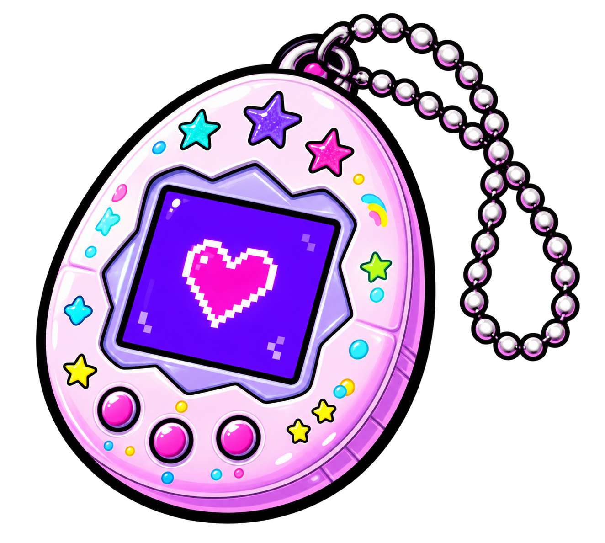
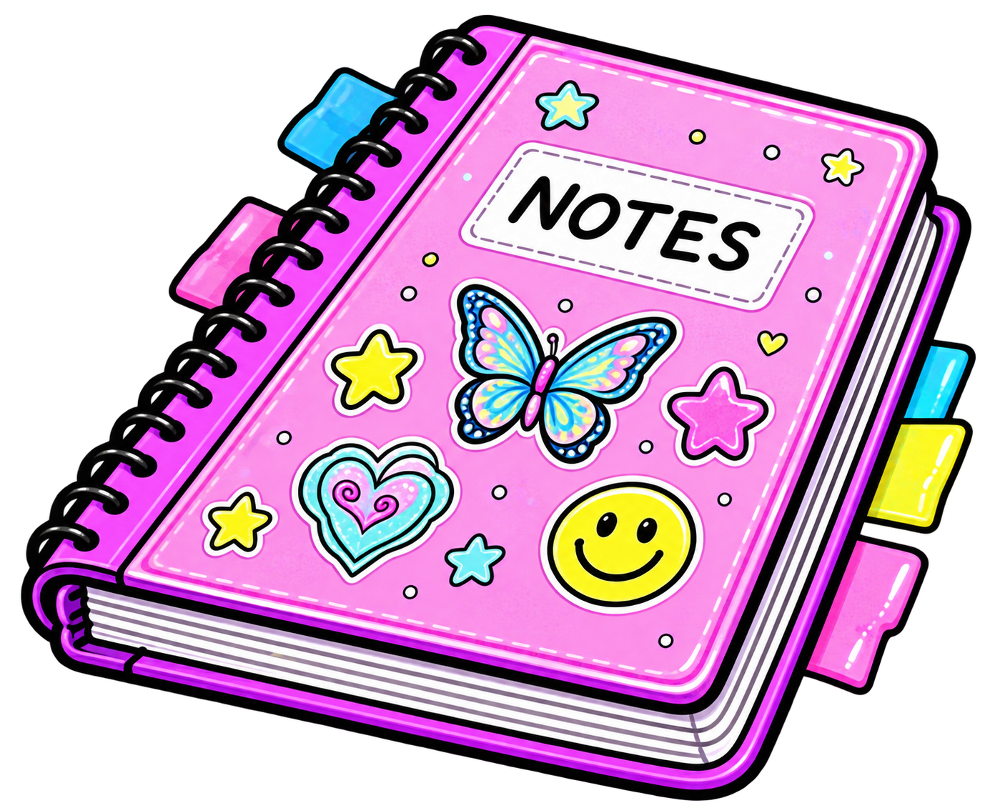
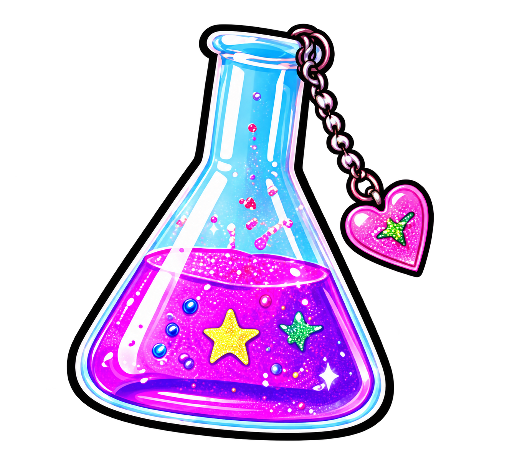
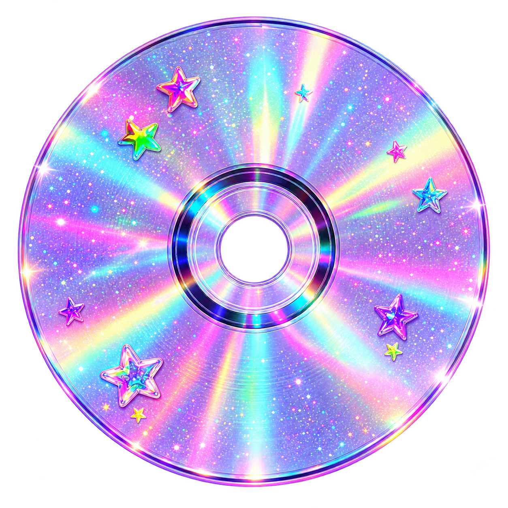
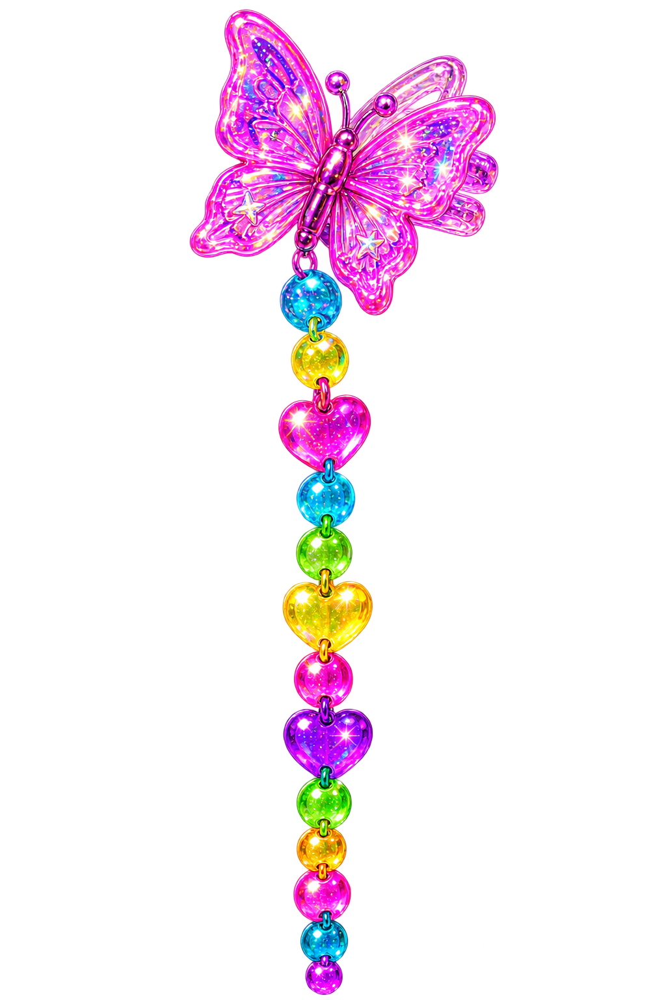

Generators
Creative prompts, fictional records, magnetic poetry, character details, and other tools built for the joy of trying things.
Browse projects ↗ ✦
✦Strange little tools for very specific people.
GENERATORS ✧ TEMPLATES ✧ OBSIDIAN SETUPS ✧ CREATIVE PROMPTS ✧ EXPERIMENTS

GENERATORSSilly, serious, and unhinged generators for creatives, planners, daydreamers, and specific little guys.
→ 02
OBSIDIANSetups, templates, workflows, and ideas to make your brain feel a little more like home.
→ 03
EXPERIMENTSHalf-baked ideas, weird little tools, visual toys, and ongoing projects in progress.
→

I make strange little tools
for very specific people.
This is a corner of the internet for creatives, overthinkers, daydreamers, notetakers, and anyone who loves making life a little more fun, weird, and colorful.
♡STRANGERS
CREATIVES
WEIRDOS
FRIENDS
ALL WELCOME ♡
Creative prompts, fictional records, magnetic poetry, character details, and other tools built for the joy of trying things.
Browse projects ↗Colorful themes, Notelets, and playful ways to arrange the information you care about.
Browse projects ↗Interfaces, little utilities, and ideas that refused to stay inside the notes app.
See an experiment ↗Stories, essays, ideas, and the occasional very specific rabbit hole.
Read the blog ↗